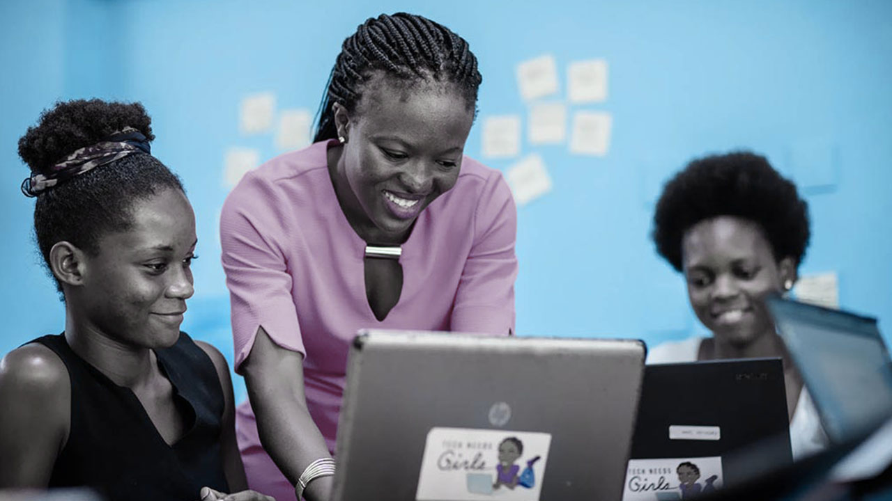
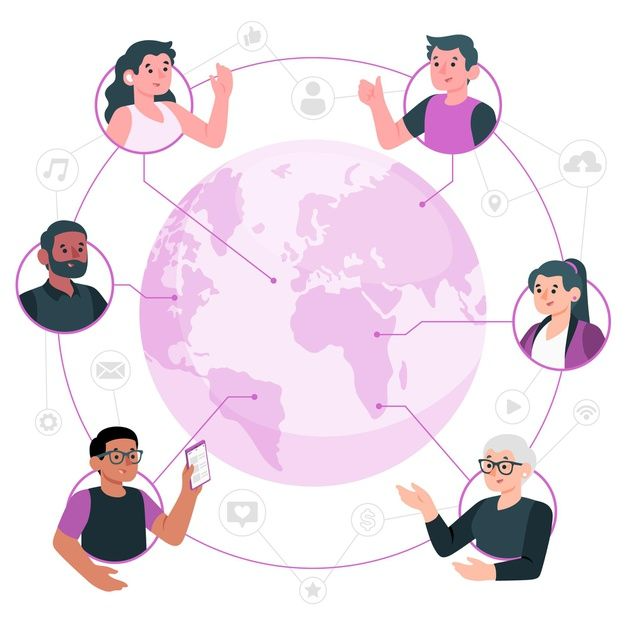

Stay connected
Join our growing community and connect with us on social media!
A Decentralized Hub for Women's Empowerment in Tech

Tech Sisters is more than a community—it’s a movement dedicated to bridging gaps, fostering growth, and creating opportunities for women in tech. Our goal is simple: empower women to lead and thrive in the decentralized future of Web3 and beyond. Through education, collaboration, and networking, we’re building a world where women are at the forefront of tech innovation.
Empowering Women, Building the Future
Learn the ins and outs of blockchain, Web3, and tech innovation through workshops, tutorials, and resources tailored to all skill levels. Beginner-friendly courses to kickstart your tech journey. Advanced resources for honing your expertise.

Connect with a global community of like-minded women and allies. Build meaningful relationships that inspire and propel your career forward. Exclusive community meetups and events. A supportive network of professionals and mentors.
Tech Sisters celebrates women in tech by giving them a platform to shine. Share your projects, skills, and ideas with a global audience. Pitch your projects to a supportive audience. Get featured in our community spotlight series.
We link women to internships, jobs, and partnerships in Web3 and tech industries. Access to job boards and freelance opportunities. Personalized career mentorship to guide your path.
Join our growing community and connect with us on social media!